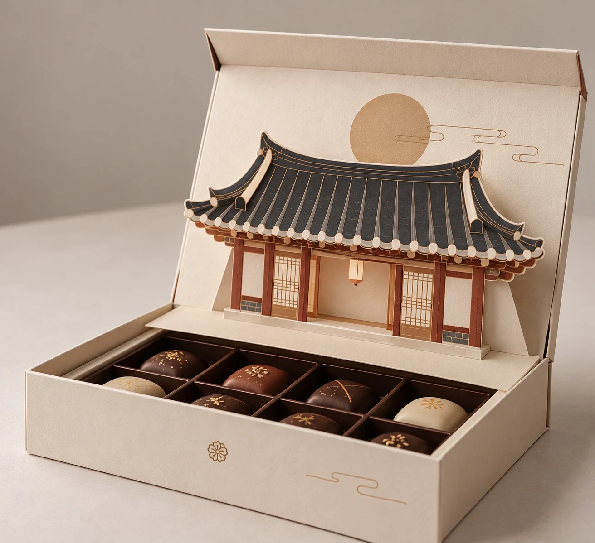
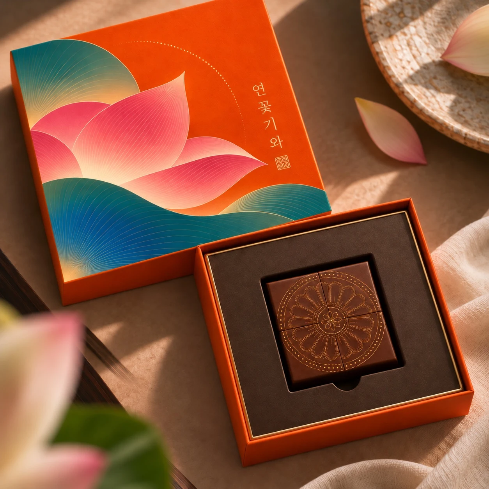
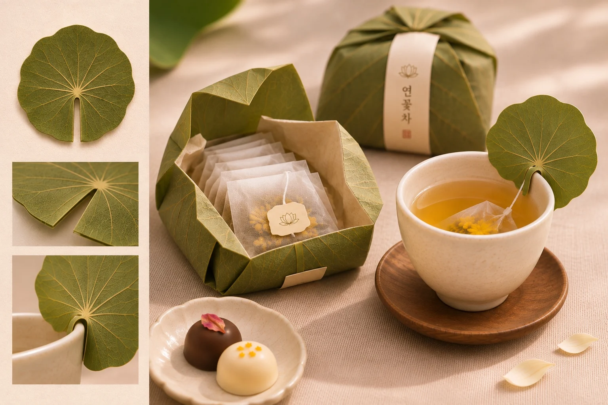
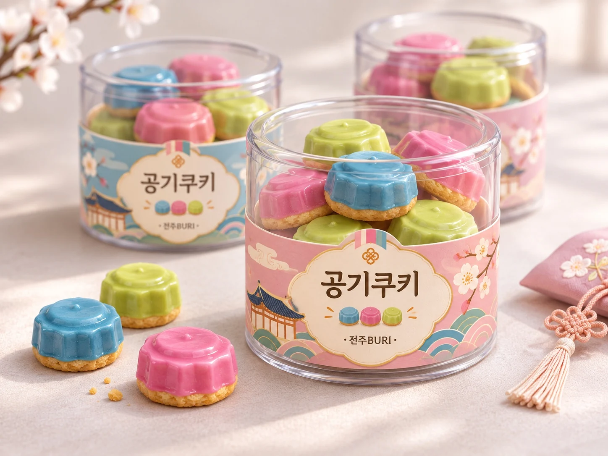

BURI’S EDIT / 01
BURI가 고른 제품
곡선, 색, 놀이. 서로 다른 매력으로 고른 네 가지.
이번 컬렉션의 이야기 / 02
기와의 선과 문양
기와의 곡면, 수막새의 꽃무늬.
지붕 위의 형태를 한 상자 안으로 옮겼습니다.


COLLECTION 001
여덟 가지 시안,
하나의 시선.
형태와 문양, 놀이와 포장에 담은 생각을 만나보세요.
현재 소개된 제품은 기획 시안입니다. 실제 제품 구성과 출시 여부는 제작 과정에서 달라질 수 있습니다.
ABOUT BURI
전주의 뿌리에서
피어난 새로운 주전부리, 전주BURI
전통의 맛과 재료에 새로운 상상력을 더해,
전주의 매력을 특별한 한입으로 전합니다.
01 / 우리가 바라보는 것
풍경의 일부를
하나의 형태로.
지붕의 곡선과 수막새의 꽃무늬, 잎이 접히는 모양처럼 익숙한 풍경 속 작은 형태에 주목합니다. 기와 · 문양은 그 선과 장식을 초콜릿의 서로 다른 표정으로 옮긴 시안입니다.
기와 · 문양의 관점02 / 우리가 해석하는 방식
형태는 안으로,
이야기는 밖으로.
연꽃차는 연잎밥의 포장 모습에서 출발합니다. 잎이 감싸는 형태는 패키지로, 잎의 결은 찻잔에 끼우는 태그로 이어집니다. 하나의 모티프를 담는 방식과 사용하는 장면에 나누어 적용합니다.
연꽃차의 패키지
03 / 우리가 더하는 경험
먹기 전의 시간도
기억에 남도록.
공기쿠키는 놀이의 모양과 색을 떠올리게 합니다. 발굴하는 과자는 유물을 찾아내는 경험을, 한옥 초콜릿은 상자를 여는 순간의 발견을 제안합니다. 먹는 경험과 열어보는 경험을 함께 생각합니다.

COLLECTION 001 / 기획 아카이브
전체 8개
현재 소개된 제품은 기획 시안입니다. 실제 제품 구성과 출시 여부는 확정되지 않았습니다.
NOTICE
BURI의 소식과 기록.
새로운 제품, 제작 과정, 작은 이야기를 이곳에 기록합니다.